As I listened to the chimes of the night, I stared at the soul of the sinking moon, and felt envious of its kindled ability to transform and survive under such darkness. I was compelled to touch the moon, but if I did, my internal fire would crumble. It was not my moon touch, neither was it mine to sink. Although in that very moment I knew I would endure the same fate. Just like the moon, we go through different processes of suffering, healing and acceptance.